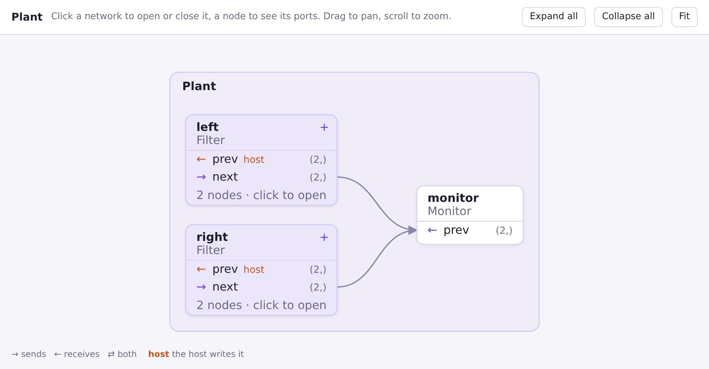
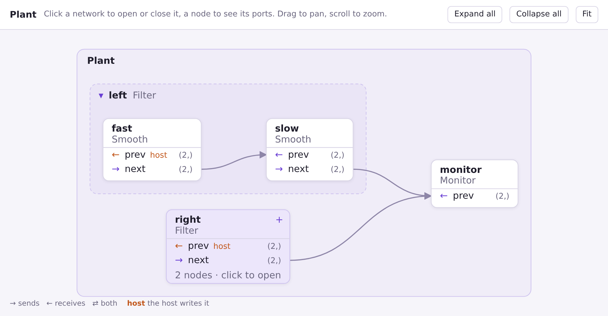
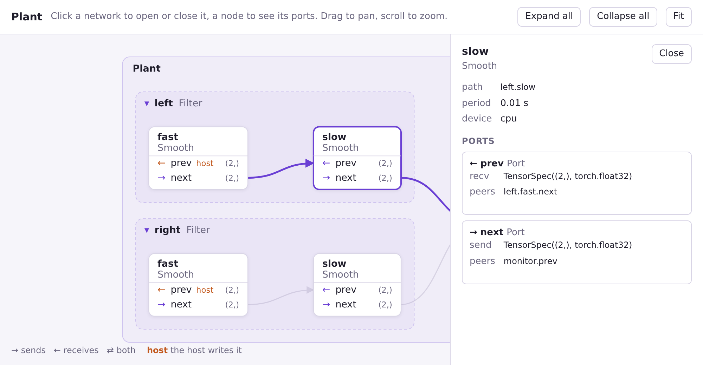

🔭 ネットワークの可視化¶
mujou.viz.to_html はネットワークのグラフを HTML のページに描く。ページはネットワークの最上位から始まり、ネットワークをクリックすると開き、ノードをクリックすると Port が見える。このページではページの書き出し方と読み方を説明する。
このページで分かること
- ネットワークを走らせずにページを書き出す方法
- ページの箱・行・矢印の意味
- 中のネットワークの開き方と、ノードの Port の spec の見方
Port と Channel と、ネットワークのパスを知っていることを前提にする。
ページを書き出す¶
要点
mujou.viz.to_html(net) はページを文字列で返す。ファイルに保存してブラウザで開く。
class Plant(mujou.Network):
def __init__(self) -> None:
super().__init__()
self.left = Filter() # a network in a network
self.right = Filter()
self.monitor = Monitor()
self.left.next.connect(self.monitor.prev)
self.right.next.connect(self.monitor.prev)
net = Plant()
Path("graph.html").write_text(mujou.viz.to_html(net), "utf-8") # open it in a browser
to_html はネットワークを mujou.run と同じように読むが、何も走らせない。hook は呼ばれず、スレッドも起動しない。そのためノードは実行と同じパスで表示される。mujou.run が受け付けないネットワーク（ネットワークの外のノードに繋がった Port など）では、ここでも同じ例外が出る。
ページは 1 つのファイルで、読み込むものが無い。オフラインで開け、そのまま人に送れる。mujou.viz は import mujou では読み込まれないので、名前で import する。
試す¶
要点
下は、上のプログラムが書き出したページそのもの。箱をクリックして開いたり、ノードを選んだりできる。
ページを読む¶
要点
ネットワークは開くまで + の付いた箱。ノードは白い箱で、Port ごとに 1 行。矢印は Channel で、受け取る側を指す。

| ページの表示 | 意味 |
|---|---|
外側の枠（Plant） |
to_html に渡したルート |
+ の付いた箱（left、right） |
閉じたネットワーク。行はそのネットワークが公開した Port（self.prev = self.fast.prev） |
白い箱（monitor） |
ノード。太字が属性名、その下がクラス |
| 行 | Port。印は働き: → は送る、← は受け取る、⇄ は両方 |
| 行の右の文字 | spec の shape: (2,)。受け取るものが違えば in … · out … |
host |
繋がっていない、受け取る Port。ホストが Run.write で書く |
| 矢印 | Channel。矢じりは受け取る側。両方向の Channel には 2 つ |
矢印の ×3 |
同じ 2 行の間の 3 本の Channel を 1 本で描いたもの |
ネットワークを開く¶
要点
閉じたネットワークをクリックすると開き、見出しをクリックすると閉じる。閉じたネットワークの中のノードへの Channel は、そのネットワークの箱に繋がる。

left を開くと、破線の枠の中に 2 つのノード fast と slow が出る。left から monitor への Channel は、left.next が指す slow.next から出るようになる。right は閉じたままなので、その Channel は right の箱から出る。
レイアウトはネットワークごとに決まる。子は Channel の順に左から右へ並び（送るノードが受け取るノードより先）、同じ列の子は代入の順に並ぶ。
ノードを見る¶
要点
ノードをクリックすると、パス・周期・デバイスと、各 Port の spec の全体と相手が見える。

箱にマウスを載せると、その箱の Channel が強調される。パネルには箱に書ききれないものが出る。
| パネル | 意味 |
|---|---|
| path | 実行の中のノードのパス（left.slow）。Run.state_dict() と同じ |
| period | Node(period=...)。実行のタイマーの秒 |
| device | Node(device=...) |
| send、recv | Port の spec の全体。dtype も含む |
| peers | Channel の相手の Port。無ければ「the host writes it」 |
動かす¶
| したいこと | 操作 |
|---|---|
| すべてのネットワークを開く・閉じる | Expand all / Collapse all |
| グラフ全体を見る | Fit |
| 表示を動かす | 背景をドラッグ |
| 拡大・縮小 | スクロール |
ページはブラウザのライト・ダークのテーマに従う。
pc.Chain¶
to_html は mujou.pc のネットワークも含め、どのネットワークでも描く。
B = 8
chain = pc.Chain(
nn.Sequential(nn.Linear(784, 256), nn.ReLU()),
nn.Linear(256, 10),
x=TensorSpec((B, 784)),
y=TensorSpec((B,), torch.int64),
batch=B,
loss=pc.CrossEntropyLoss(B),
tau=pc.TimeConstants(h=4e-3, lam=8e-3),
optimizer=pc.SGD(tau=1.28),
learn_interval=0.15,
)
Path("chain.html").write_text(mujou.viz.to_html(chain), "utf-8")
pc.Chain は input、layer0、…、output を 1 列に並べる。隣どうしは両方向の Channel で繋がり、活動が前へ進み、フィードバックが戻る。書き出したページは chain.html で見られる。
画像ではなく HTML にしたのはなぜ？
ノードの多いネットワークは、読める大きさの 1 枚の画像に収まらない。ページは最初はネットワークの最上位だけを見せ、見たいところを開いていける。必要なのはブラウザだけで、Mujou のほかにパッケージは要らない。